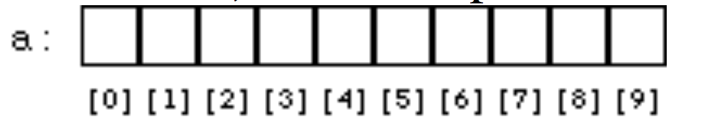

Pointers and arrays
- Pointers
- Arrays
- Multidimensional Arrays
- Pointers and arrays
Pointer
- Addresses in Memory
- The address of the variable is stored in the memory.
- We would use the address operator, an ampersand
&, to return its address. - The format specifier for address is
%p.
- Number Systems
| Common Name | Base | Digits |
|---|---|---|
| binary | 2 | 01 |
| octal | 8 | 01234567 |
| decimal | 10 | 0123456789 |
| hexadecimal | 16 | 0123456789ABCDEF |
3.Pointers
- A pointer is a variable whose contents are the
address of another variable.
Let's say that the integer is
int number = 3;the content ofnumberis 3 and the address of number is&number. We would create a pointerint *numberPtr;and copy the address of number to the pointernumberPtr = &number. The content ofnumberPtris the address ofnumber. - We would use the dereference operator,
an asterisk
*, to modify its locations in memory. Let's say that the integer isint number = 3;and the pointer isint* numberPtr;. We would copy the address of the number to the pointernumberPtr = &number. The content of number isnumber, which is 3. The content of number using pointer is*numberPtr, which is 3. We would change waht the pointer points to*numberPtr = 6. The content of number will be 6. - Pointer
numberPtrhas its own type, a type ofint*or pointer-to-int. - We would increment the address in the pointer
numberPtr++. - Pointers to pointers
- Pointers can contain the address of another pointer.
int number = 5;,int* numberPtr = &number,int** Ptr2 = &numberPtr;.
- Pointers can contain the address of another pointer.
- We would compare the addresses stored in
pointers
if(numberPtr1 == numberPtr2). - We would compare the values of the variables that
pointers point to
if(*numberPtr1 == *numberPtr2). - We would initialize the pointer to
NULL,int *numberPtr;,numberPtr = NULL.
4.Pointers and Functions
Pointers allow us to use a process called pass by reference, in which we will be able to change the value of the original variable. We do this by passing the variable’s address to the function.
5.Arrays of Pointers
A pointer is a variable type and we can have an array of pointers just as we have had arrays of other variable types.
Array
- Array is a variable that can hold more than one value.
- We would define an array of size 10
int a[10].- The array
a[10]will hold 10 integer numbers. - We could provide the specific array values
a[0] = 1,a[1] = 2, etc. - We would also declare and initialize the array at the same time
int a[] = {1, 2, 3, 4, 5, 6, 7, 8, 9}.
- The array
- The first element of the array is
a[0], the second element isa[1], etc. 
{kind=link}
[info] Array
- Each element of the array will be of the same type.
- Array indices began at 0.
- The initialized values will be at the beginning of the array.
- The remaining values will be initialized to zero.
[warning] Array out of bounds
- A common error is the “array out of bounds” error that occurs when the index goes beyond the declared size.
- The value outside the assigned range will be changed.
Multidimensional Arrays
- 2D array
int a[rows][columns] = { {1, 2, 3}, {4, 5, 6} };
- 3D array
int a[][][];
[warning] 1D and 2D arrays differences
When declaring a 2D array, the number of columns is required.
Pointers and arrays
1.Pointers and arrays are closely linked in C.
/*array name evaluates to the address of
* the first element in the array*/
#include <stdio.h>
int main() {
int num[4] = {1, 2, 3, 4};
printf("The address of num[0] is %p\n", num);
printf("The content of num[0] is %d\n", *num);
return 0;
}
[info] Arrays
The array namenumis the address of the first element, and*numis the content of the first element.
/*array name evaluates to the address of
* the first element in the array*/
#include <stdio.h>
int main() {
int num[4] = {1, 2, 3, 4};
int* numPtr = num;
int* firstPtr = &num[0];
printf("The address of num[0] using numPtr is %p\n", numPtr);
printf("The content of num[0] using numPtr is %d\n", *numPtr);
printf("The address of num[0] using firstPtr is %p\n", firstPtr);
printf("The content of num[0] using firstPtr is %d\n", *firstPtr);
return 0;
}
[info] Pointers and arrays
Let's say thatfirstPtris the pointer to the integernum[0], declared asint* firstPtr;.
firstPtr = &num[0]is the address ofnum[0].*firstPtris the contents ofnum[0].
2.We would increment the address to move through the array.
#include <stdio.h>
int main() {
int num[4] = {1, 2, 3, 4};
printf("The address of num[1] is %p\n", num + 1);
printf("The content of num[1] is %d\n", *(num + 1));
return 0;
}
#include <stdio.h>
int main() {
int num[4] = {1, 2, 3, 4};
int* numPtr = num;
int* firstPtr = &num[0];
printf("The address of num[1] using numPtr is %p\n", numPtr + 1);
printf("The content of num[1] using numPtr is %d\n", *(numPtr + 1));
printf("The address of num[1] using firstPtr is %p\n", firstPtr + 1);
printf("The content of num[1] using firstPtr is %d\n", *(firstPtr + 1));
for (int i = 0; i < 4; ++i) {
printf("The address of num[%d] using firstPtr is %p\n", i, firstPtr + i);
printf("The content of num[%d] using firstPtr is %d\n", i, *(firstPtr + i));
}
return 0;
}
[info] Pointer arithmetic
Let's say thatfirstPtris the pointer to the integernum[0], declared asint* firstPtr;.
firstPtr + iis the address ofnum[i].*(firstPtr + i)is the contents ofnum[i].
#include <stdio.h>
int main() {
char charArray[] = {'a', 'b', 'c', 'd', 'e'};
int intArray[] = {1, 2, 3, 4, 5};
printf("charArray intArray\n");
printf("------------------------------\n");
for (int i = 0; i < 5; ++i) {
printf("%p %p\n", charArray + i, intArray + i);
}
return 0;
}
[info] Pointer arithmetic
Pointer arithmetic handles the task of determining the address of the next element in the array.
3.Arrays and functions
[info] Arrays as function parameters
- We would pass the address of the first element of an array
int num[] = {1, 2, 3};function(num);.- The subscript style of the array as function parameters
void function(int data[]){}.- The pointer style of the array as function parameters
void somefunction(int* data){}.
4.2D Arrays
#include <stdio.h>
int main() {
int data[2][3] = {{1, 2, 3},
{6, 7, 8}};
printf("The address of data is %p\n", data);
printf("The address of row 0 is %p\n", *data);
printf("The value of the data[0][0] is %d\n", **data);
return 0;
}
[info] 2D Arrays
- Returning the address of any element of any row
*(array_name + row) + column.- Returning the value of any element of any row
*(*(array_name + row) + column).
5.Pointers to 2D arrays
#include <stdio.h>
int main() {
int data[2][3] = {{1, 2, 3},
{6, 7, 8}};
int *ptrOne = &data[0][0];
int (*ptrTwo)[3] = data;
printf("The first element of array is %p\n", ptrOne);
printf("The first element of array is %p\n", ptrTwo[0]);
return 0;
}
[info] 2D Arrays
- We can also create a pointer to a 2D array.
- The
int *ptrOne = &data[0][0];allows pointer arithmetic based on individual ints.- The
int (*ptrTwo)[3] = data;allows pointer arithmetic based on row/column values for accessing the array elements.
6.We can have an array whose members are pointers.
7.The typical use for arrays of pointers is not with numeric types, such as int or double, but with strings.